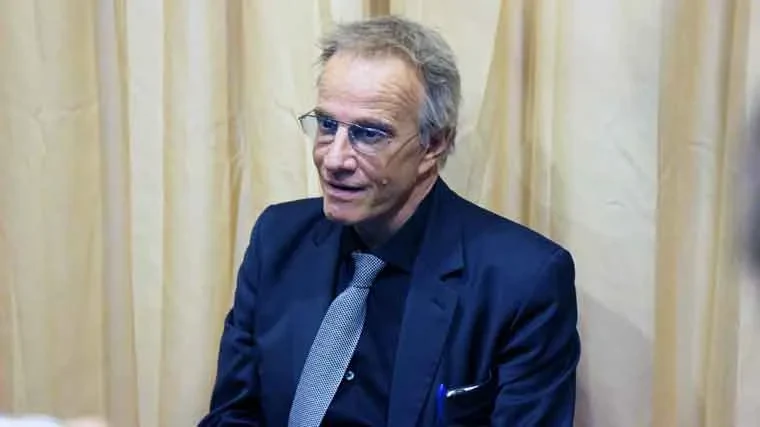
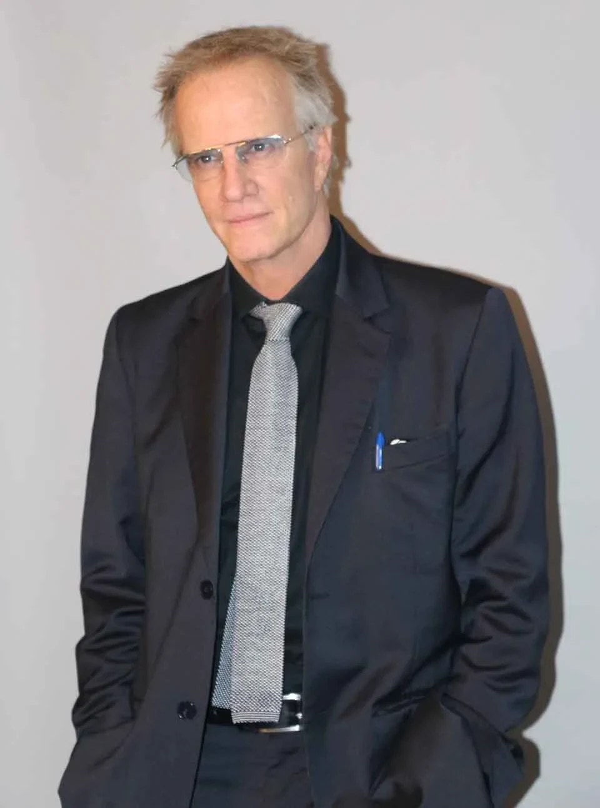

Christophe LAMBERT foi, ao lado da jornalista Claire CHAZAL, padrinho da 155ª edição do Grande Leilão dos Hospices de Beaune. Inicialmente sua participação se destinava a angariar fundos para duas instituições de pesquisa, o Institut Curie (para a pesquisa da imunoterapia contra o câncer) e a Fundação de Pesquisa sobre o AVC (para financiar um estudo sobre as razões do avanço de casos de AVC em mulheres jovens). Mas os atentados da sexta-feira, 13 de novembro, em Paris, às vésperas do leilão, fizeram com que um terço do dinheiro arrecadado fosse para as famílias das vítimas.

O Highlander bateu o martelo depois de atropelar todos os recordes das 154 edições anteriores. O lance vencedor foi de 480 mil euros por 228 litros de Corton Renardes Grand Cru, festejado com aplausos de toda a plateia. A compradora, que deu seu lance por telefone, pediu para não ser identificada. Deixou dizer apenas que é francesa e que seu gesto era de solidariedade com as vítimas dos atentados de Paris. No ano anterior, a pièce des présidents, a barrica cuja venda vai inteira para instituições de caridade, havia chegado a 220 mil euros. O recorde até então era de 400 mil, em 2010.
Nota da redação (2026) A venda de 2015 também foi recorde no total, com 11,3 milhões de euros, contra 8,1 milhões em 2014. O recorde da pièce des présidents durou alguns anos; em 2022, a barrica chegou a 810 mil euros. O leilão, conduzido pela Christie’s de 2005 a 2020, é feito pela Sotheby’s desde 2021.
A 155ª venda, em 2015
desde 1859, sempre em novembro
recorde; o anterior era de 400 mil, em 2010
recorde; 8,1 milhões em 2014
O leilão é um dos eventos mais interessantes do mundo para quem ama vinho, mas é inútil querer saber a opinião de Christophe LAMBERT sobre a safra 2015 da Borgonha. Aos 58 anos, um dos primeiros franceses a alcançar o sucesso em Hollywood, foi um homem de excessos. LAMBERT já abordou publicamente seu problema de alcoolismo, e contou que nos últimos 15 anos já teve uma dezena de recaídas, mas que hoje está muito bem, e sem nenhum contato com álcool.
Amável e muito carismático, Christophe LAMBERT é hoje um homem diminuído, de fala pausada e voz extremamente rouca, que pouco lembra o jovem Tarzan do filme que o consagrou em 1984. Mas suas convicções não estão longe das de um herói e, cigarro na mão, LAMBERT resume para nós a sexta-feira 13 em Paris:
Ouça a entrevista
“Estamos todos perdidos”
“Na sexta-feira houve uma onda de atentados terroristas em Paris, de homens com cintos de explosivos, armados com kalashnikovs, armas de guerra, que simplesmente atiravam na multidão, que tomaram uma sala de espetáculos, onde eles mataram mais de 80 pessoas, feriram, 60, 70, uma centena… E em seguida eles tomaram reféns. Portanto foi um choque, e é um choque a cada vez que algo assim ocorre. Porque, que isso aconteça aqui na França, que isso aconteça na Inglaterra, na Espanha, em qualquer país do mundo, é um choque. E é um choque que deve nos provar que devemos ser solidários e que nos mantenhamos unidos, porque se houver desunião nesses momentos, estamos TODOS perdidos. Por isso é absolutamente necessário que sejamos unidos, é necessário que juntos combatamos esta forma terrível de terrorismo. Porque o terrorismo evoluiu, os terroristas não estão mais defendendo um valor, seja político, seja religioso. Eles estão aí só para matar. Isso é completamente desprovido de sentido, pois a partir do momento que as coisas não têm mais uma mensagem poderosa, elas não têm razão de existir. E eu acredito que não é na guerra, não é na matança, não é no massacre que vamos encontrar uma solução. Por isso é importantíssimo que nos mobilizemos para que tudo isso pare.”
Nota da redação (2026) O balanço final dos atentados de 13 de novembro de 2015 foi de 130 mortos, 90 deles na sala de espetáculos Bataclan, e mais de 400 feridos.
Se houver desunião nesses momentos, estamos todos perdidos.
Christophe LAMBERT
De Nova York ao Amazonas
Filho de franceses, nascido em Nova York, Christophe LAMBERT passou sua infância na Suíça. Uma história comum entre filhos de funcionários das Nações Unidas, até o dia em que ele decide fazer teatro. O ator que encarnou o rei das selvas conta a carreira com muita modéstia:

“Minha carreira aconteceu bem naturalmente. Ou seja, eu fiz duas escolas de teatro, e depois eu fiz alguns castings, e tive a sorte de ser escolhido para um grande filme americano, Greystoke, que foi meu primeiro grande filme, e depois eu naveguei entre a França, os Estados Unidos, a Itália, a Alemanha… vários países do mundo. Continuo fazendo isso hoje, e faço muitas outras coisas também. Isso me levou várias vezes ao Brasil, ao Rio, a São Paulo… e eu tive a sorte de poder subir o Amazonas, fui do Rio a Manaus, ou descer, não sei como devemos dizer. E isto foi uma jornada extraordinária, pois foi a primeira vez na minha vida que eu entendi, que se eu me perdesse nesta selva amazônica… é realmente um lugar onde ou temos faculdades excepcionais de sobrevivência, ou morremos. Pois há uma tal força da água, da selva, da fauna e da flora. A menos que sejamos combatentes, que tenhamos um instinto muito forte, não é possível. Em algum momento a gente se entrega. A gente não é nada comparado a estas forças da natureza.”
Mas você é o Tarzan?
“Isso é cinema! E mesmo se eu já me confrontei com algumas situações na selva, tudo isso é cinema.
Não quero com isso destruir a fantasia, mas tudo isto é o lado do sonho que o cinema proporciona. Mas se, na realidade, eu ficasse preso na selva amazônica, eu acho que seria bem mais difícil.”
Isso é cinema!
Christophe LAMBERT, sobre Tarzan
“Não existe ninguém que filme como Russell Mulcahy”
O filme do cineasta australiano Russell MULCAHY fez com que o personagem Connor MacLeod, interpretado por Christophe LAMBERT, se tornasse personagem da cultura pop brasileira. Highlander faz parte do vocabulário nacional, da mesma forma que MacGyver ou o capitão Nascimento são nomes de personagens utilizados para definir características fortes.
Do Tarzan ao Highlander
- 1984
‘Greystoke’, de Hugh HUDSON. O primeiro grande filme.
- 1986
César de melhor ator por ‘Subway’, de Luc BESSON.
- 1986
‘Highlander’, de Russell MULCAHY, com música do Queen.
- 2015
‘Un + une’, de Claude LELOUCH, e ‘Ten Days in a Madhouse’.
- 2016
‘Hail, Caesar!’, dos irmãos COEN.
“Tenho um pouco de consciência disso, mas prefiro não pensar muito nisso. Eu fiz este filme porque para mim era um filme romântico, mais que um filme de ação. A partir do momento que tratamos da imortalidade, é algo romântico. Porque o diretor, visualmente, era um revolucionário. É alguém que, ainda hoje, visualmente, não tem equivalente. Não existe ninguém que filme como Russell Mulcahy, ainda nos dias de hoje. Talvez o filme tenha envelhecido nos efeitos especiais, mas não na história, nem na maneira de filmar essa história. Por isso é excepcional, pois o filme atravessou três gerações. A música do Queen! Quem pode reproduzir algo assim? Ninguém mais pode. Não é com a música de hoje, que pode até ser simpática, mas é música de supermercado, música de elevador. Não temos mais a música do Queen, como não temos mais a do U2, a do Led Zeppelin, a dos Doors. Mudaram o sistema musical para torná-lo puramente lucrativo, em vez de simplesmente criativo. Na média, claro que existem exceções.”

Lelouch, os irmãos Coen e Nellie Bly
LAMBERT vive um bom momento numa carreira marcada por altos e baixos, e acaba de rodar três grandes produções:
“Acabo de terminar um filme de Claude LELOUCH com Jean DUJARDIN, que ganhou o Oscar por ‘The Artist’. Fiz uma parte do filme dos irmãos COEN, que se chama ‘Hail, Caesar!’, mas quando digo uma parte são pequenos papéis, muitas vinhetas de dois, três minutos para atores que vieram por um ou dois dias. Mas se os irmãos COEN me pedissem para ir, apenas para abrir uma porta, eu iria. E eu estou muito contente de participar deste filme. E depois fiz outro filme americano, ‘Ten Days in a Madhouse’, sobre a vida da primeira jornalista investigativa, Nellie BLY, que estreou nos Estados Unidos há quatro dias e, ao que parece, vai muito bem.”
Nota da redação (2026) ‘Un + une’, de Claude LELOUCH, estreou na França em dezembro de 2015. ‘Hail, Caesar!’, dos irmãos COEN, em fevereiro de 2016.
Sem largar o cigarro, o ídolo de toda uma geração não se despediu sem dizer, em bom português: OBRIGADO!
Seis séculos de caridade
- 1443
Nicolas ROLIN, chanceler do duque da Borgonha, e Guigone de Salins fundam o hospital.
- 1452
O Hôtel-Dieu recebe os primeiros doentes.
- 1859
Primeiro leilão anual dos vinhos das vinhas doadas aos Hospices.
- 2005
A Christie’s passa a conduzir as vendas.
- 2015
155ª venda: 11,3 milhões de euros e a barrica dos presidentes a 480 mil, dois recordes.
- 2021
A Sotheby’s assume o leilão. Em 2022, a barrica dos presidentes chega a 810 mil euros.
Glossário
Para entender
- Hospices de Beaune
- Instituição hospitalar fundada em 1443 por Nicolas ROLIN, chanceler do duque da Borgonha, e por sua mulher, Guigone de Salins. O prédio original, o Hôtel-Dieu, é hoje museu.
- Domaine des Hospices
- As vinhas doadas aos Hospices ao longo de cinco séculos. Os vinhos são vendidos em leilão todo mês de novembro, e a renda mantém os hospitais de Beaune.
- Pièce
- A barrica borgonhesa de 228 litros, o equivalente a cerca de 300 garrafas. É a unidade do leilão.
- Pièce des présidents
- A barrica de caridade, vendida no meio do leilão pelos padrinhos do ano. A renda vai inteira para as instituições que eles escolhem.
- Corton Renardes
- Um dos climats do Grand Cru Corton, na colina de Corton, ao norte de Beaune.
Quem é quem
- Claire CHAZAL
- Jornalista francesa, apresentou por mais de vinte anos o jornal de fim de semana da TF1. Foi madrinha da venda de 2015 pelo Institut Curie.
- Greystoke
- ‘Greystoke, a lenda de Tarzan, o rei da selva’ (1984), de Hugh HUDSON. O filme que lançou LAMBERT.
- Russell MULCAHY
- Diretor australiano de videoclipes e de ‘Highlander’ (1986), com música do Queen.
- Claude LELOUCH
- Diretor francês. ‘Un homme et une femme’ ganhou a Palma de Ouro em 1966 e dois Oscars em 1967, de filme estrangeiro e de roteiro original.
- Nellie BLY
- Jornalista americana (1864-1922). Em 1887, fingiu-se louca para ser internada num manicômio de Nova York e denunciar o tratamento dado às pacientes.